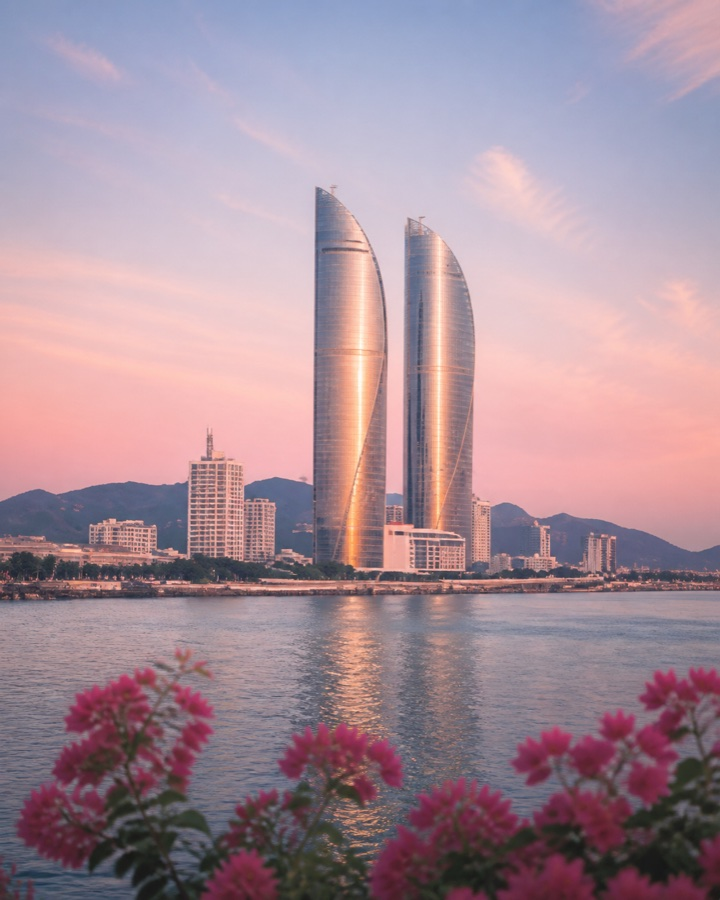

天
下一次出游
Next Journey

目的地
还没有填写
把第一站写进计划
出发日期
尚未确定
等待出发
同行天数
-- 天
一起慢慢走
查看计划 →
Our Space
把喜欢的日子，一页页收好
Anniversary
从相遇变成我们
我们的纪念日
把普通日子也认真记住
这里会自动提醒 300 天、365 天、520 天和更远的纪念日。你们可以提前安排一顿饭、一束花、一场短途旅行，或者只是认真说一句“今天也很喜欢你”。
Upcoming
出游计划
China Footprint
我们的中国旅行地图
以市为单位记录足迹。拖拽或缩放地图，路线会保留每一段的交通方式。
还没有出游计划。
点击“添加计划”，把下一次想去的地方写下来。
Memories · Our Story
出游记录
把走过的城市、当时的心情和沿途照片，慢慢连成我们的故事。
0 段旅程
0 座城市
0 张照片
我们的时间轴
按时间记录每一次出发还没有出游记录。
旅行回来后，可以把那天发生的事写在这里。
Together List
一起想做的事
不只限于旅行，也可以写吃一顿饭、看一场电影、拍一组照片，或者任何想一起完成的小事。
0 个愿望
·
已完成 0 个
一起把日常，过成回忆。
还没有想做的事。
从上面的输入框开始添加。
Gallery